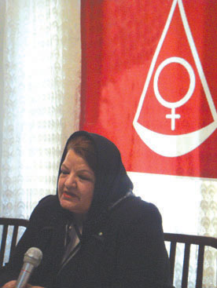

پذيرش > سایت نوشته ها > واژه حمايت در اين لايحه بيمعناست / روزنامه سرمایه


 واژه حمايت در اين لايحه بيمعناست / روزنامه سرمایه واژه حمايت در اين لايحه بيمعناست / روزنامه سرمایه
17 شهریور 1386 - - نسخه قابل چاپ
سرمايه _ «اگر لايحهء جديد خانواده در مجلس مطرح شود، ما زنان صداي اعتراضمان را بلند ميكنيم.»
اين واكنش فعالان حوزهء زنان در برابر لايحهء جديد خانواده است كه يكي از بندهاي آن به مردان اجازهء ازدواج مجدد را بدون كسب اجازه از همسر اول ميدهد.
عصر يكشنبه جمعي از فعالان حوزهء زنان و حقوقدانان دور هم جمع شدند تا لايحهء جديد خانواده را كه قوهء قضاييه و دولت به مجلس ارايه داده از ابعادحقوقي،جامعهشناختي و روانشناختي مورد بررسي قرار دهند تا به بررسي مستندتر اين لايحه بپردازند.
ابتداي اين نشست سه ساعته، ابعاد حقوقي اين لايحه بررسي شد. فريده غيرت و نسرين ستوده از حقوقدانان و فعالان حوزهء زنان بندبند اين لايحه را به لحاظ حقوقي بررسي كردند.
فريده غيرت در ابتداي سخنانش به تلاش يك سالهء كمپين يك ميليون امضا اشاره و تاكيد ميكند كه اقدام كمپينيها براي رفع نابرابريهاي حقوقي است و هيچ مخالفتي با شرع اسلام و نظام ندارد: «همانطور كه در رژيم پهلوي براي به دست آوردن حق راي تلاش كرديم امروز هم براي به دست آوردن قوانين برابر تلاش ميكنيم و اين اصلاً سياسي نيست.»
او ادامه ميدهد: «چندي پيش مسالهء متعه مطرح شد. متعه يعني تمتع در مقابل يك مزد كه اين اصلاً ازدواج نيست. چرا كه در تعريف ازدواج حفظ بنيان خانواده مدنظر قرار گرفته است.»
او ميگويد:«من در جريان مطرح شدن بحث متعه با آن مخالفت كردم اما حالا مسالهء جديدي با نام لايحهء حمايت خانواده مطرح كردهاند.»
اين حقوقدان ميگويد: «نام اين لايحه، لايحهء حمايت از خانواده است در حالي كه اطلاق حمايت خانواده بر آن بسيار بيمعناست. چون حمايت از خانواده زماني است كه قوانين تبعيضآميز عليه زنان مورد بررسي قرار گيرد اما اين لايحه نحوهء اداره و فرم دادرسي اختلافات خانوادگي است.»
او مقدمهء اين لايحه را ميخواند: «با عنايت به نقش و جايگاه خانواده در نظام حقوقي و تربيتي اسلام و به منظور تحقق بخشيدن به مفاد اصل «21» قانون اساسي و با اذعان به وجود برخي كاستيها و نواقص در قوانين موجود حاكم بر نهاد خانواده و در نتيجه سردرگمي محاكم دادگستري دررسيدگي به دعاوي مطروحه و نيز آثار زيانباري كه از رهگذر ابهام، اجمال، سكوت قوانين و تطبيق آنها با واقعيات روز به نهاد خانواده و جامعه وارد ميآيد، ضرورت بازنگري در اين قوانين وتدوين لايحهاي كه تا حد امكان مشكلات موجود را مرتفع كرده و نسبت به تنگناهاي احتماليآينده نيز پاسخگو باشد، به خوبي احساس ميشود.»
او ميافزايد: «متاسفم كه با اين بررسي كه دربارهء حقوق خانواده شده چرا از اصل «21» قانون اساسي فقط بند سه را مد نظر قرار دادهاند. اما اصل «21» قانون اساسي دربارهء حقوق زنان صحبت كرده است.»بر اساس همين اصل دولت موظف است حقوق زن را در تمام جهات با رعايت موازين اسلامي تضمين كند: «1- ايجاد زمينهء مساعد براي رشد شخصيت و احياي حقوق مادي و معنوي فراموش شده 2- حمايت از مادران به ويژه در دوران بارداري و حضانت فرزندان 3- ايجاد بيمه براي بيوهگان و زنان سرپرست خانوار 4- اهداي قيموميت»
به عقيدهء غيرت از ميان بندهاي مختلف اصل «21» قانون اساسي تنها بند سه مد نظر است، بندي كه آيين دادرسي و نظام دادرسي است.
او ميگويد: «اين به هيچ وجه حمايت خانواده نيست و فقط آيين دادرسي خانواده است. حمايت وقتي است كه مادر حق تصميمگيري براي فرزندانش را داشته باشد، حق ارث داشته باشد و...»
او ايراد ديگري هم در مسالهء ثبت ازدواج در اين لايحهء جديد ميگيرد: «در اين لايحه مسالهء ثبت متعه حذف شده است و ذكر شده كه زوجين در صورت تمايل ميتوانند آن را ثبت كنند كه اين ايراد بسيار بزرگي است و حتي در بحث ازدواج مجدد كه زماني برايش مجازات كيفري در قانون وجود داشت اما حالا ازدواج مجدد با تشخيص دادگاه و با تشخيص رعايت عدل امكانپذير است.»
او اين سوال را مطرح ميكند كه كدام مردي در دنيا پيدا ميشود كه ادعا كند ميتواند عدالت را برقرار كند. همانطور كه به صراحت در قرآن آمده كه بترسيد اگر نتوانيد عدالت را برقرار كنيد.
اين وكيل، شرط برقراري عدالت را تعليق به امر محال ميخواند.نسرين ستوده هم با تاييد حرفهاي همكارش اينگونه ادامه ميدهد: «چه كسي ميپذيرد كه خانواده با حق تعدد زوجات يكي از زوجين تقويت ميشود. لايحهء حمايت واژه معكوسي است كه بهتر بود نامش را بر لايحه اطلاق نميكردند.»
او معتقد است:«اين لايحه همچنان بر رياست مردان در دادگاههاي خانواده اصرار دارد. دادگاههايي كه اغلب با رياست مردان،درك نادرستي از احساس زنانه و مادرانه دارند.»
او در ادامه به قوانين نابرابر در ثبت وقايع ازدواج و طلاق، حق حضانت و ... اشاره ميكند.
اما در ميانههاي برنامه زني اهل يوگسلاوي كه با مردي ايراني ازدواجكرده بود پشت تريبون درد دل كرد. اين زن 30 سال است كه در ايران زندگي ميكند اما حالا متوجه شده كه همسرش 10 سال است ازدواج دوم داشته و او بدون هيچ سندي تمام تلاشهاي 30 سالهاش را كه دو ملك در كامرانيه و كلاردشت بود به نام شوهرش كرده است و حالا هيچ سندي ندارد.
شهلا اعزازي و شيوا دولتآبادي هم از ديگر سخنرانان اين جلسه ابعاد جامعهشناسانه و روانشناسانه ازدواج مجدد را مورد بحث قرار دادند.
روزنامه سرمایه
ارسال به
بالاترین
،
توییتر
،
فریندفید
،
فیسبوک
در همين بخش :
 یک خبر تلخ؟ یک قانونشکنی؟ یک تصمیم بخشنامهای جدید؟ یک خبر تلخ؟ یک قانونشکنی؟ یک تصمیم بخشنامهای جدید؟
چرا بایست به سکسوالیته پرداخت؟ / نفیسه آزاد
آزارجنسی خانگی؛ «قربانی» نه، «نجات یافته»
زنان، بزرگترین بازندگان بهار عرب
سانسور از دیدگاه جنسیتی/الهه امانی
ديگر بخش ها :
طرح یک میلیون امضا
|
مقالات
|
سایت نوشته ها
|
اخبار
|
گزارش كمپين
|
گفت و گو
|
علیه سکوت
|
كوچه به كوچه
|
نامه های شما
|
گزارش ویژه
|
گفتگو با اعضا
|
ویژه سالگرد کمپین
|
تصویر برابری
|
دل آرام علی
|
تریبون
|
مقالات
|
تاریخ شفاهی
|
خارج از چارچوب
|
کتابخانه
|
درباره کمپین
|
کمپین در شهرها
|
کمپین در بند
|
صدای تغییر
|
ویژه 22 خرداد
|
لایحه حمایت از خانواده
|
گالری
|
عشا مومنی
|
امیر یعقوبعلی
|
خدیجه مقدم
|
راحله عسگری زاده و نسیم خسروی
|
پروین اردلان،جلوه جواهری، مریم حسین خواه، ناهید کشاورز
|
زینب پیغمبرزاده
|
سعیده امین، سارا ایمانیان، محبوبه حسین زاده، ناهید کشاورز و همایون نامی
|
احترام شادفر
|
نسیم سرابندی زاده،فاطمه دهدشتی
|
وبلاگ مهمان
|
پرونده خرم آباد
|
دستگیری ها
|
مریم مالک
|
پرستو اللهیاری
|
مهرنوش اعتمادی
|
سمیه رشیدی
|
Other Languages
|
همراهان
|
«فراخوان کمپین ده روز با بهاره هدایت»
| English
|